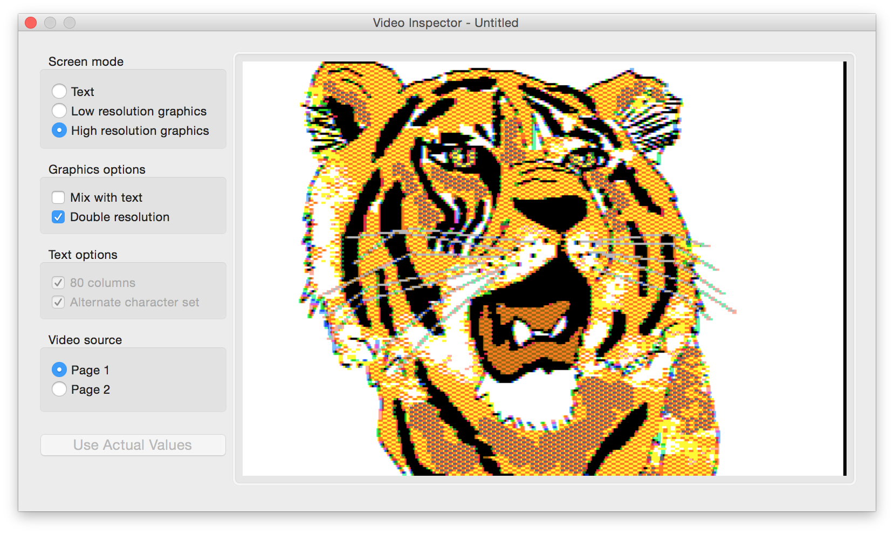

The Virtual ][ Inspector
Copyright © 2006-2018, Gerard Putter
Contents
Introduction
Operation of the Inspector
The Inspector main window
Managing breakpoints and watchpoints
Working with memory banks
Inspecting the disk drives
Using the "instruction trail"
Using the CPU and memory editors
Introduction
The Inspector is a part of Virtual ][ that allows you to closely observe the
inner workings of the emulated Apple ][, and is therefore aimed at the
technically interested. If you want to use Virtual ][ just to run applications or
play the old games, then you can safely skip reading this chapter. However, if you want to find out what exactly
goes on when running a specific Apple ][ application, the Inspector can be a great help. If you are
a software developer, you'll feel comfortable with the Inspector, because it basically is
a debugger for Apple ][ programs.
More specifically, the Inspector allows you to:
- Look at the current state of the processor.
- Look at the stack.
- Look at the internal memory in hexadecimal dump format.
- Look at the internal memory in disassembly format.
- Search for a sequence of bytes in memory.
- Switch between different memory banks, such as main and aux memory in the Apple //e,
or ROM and language-card memory in the Apple ][.
- See the effect of any combination of video settings.
- Look at the data on a floppy disk at the nibble level.
- Get an overview of the most recently exectuted instructions (with a maximum of 999999). This
can be very useful when detecting an endless loop.
- Execute instruction one by one, using the "Step Over", "Step Into" and "Step Out" buttons.
- Set breakpoints, watchpoints and I/O address breaks.
- Change the Apple II memory (RAM as well as ROM).
- Change the 6502 CPU registers.
- Save the state of the Inspector along with the virtual machine state, so you can continue
an Inspector session later on.
Note that the disassembly feature works for the 6502 and 65C02 procesors only. The Inspector
does not support the Z80.
This documentation explains how to use the Inspector. It does not explain about the
processor instruction set, the Apple I/O addresses and other Apple ][ specific
technical details.
Operation of the Inspector
When you start Virtual ][, the Inspector is not active. You must explictly activate
it by choosing "Show Inspector" from the "Machine" menu. This opens the main Inspector window.
With the Inspector active, the virtual machine can be in one of two states: either it is running
or it is in an Inspector "break". While the virtual machine runs, its internal state changes continuously,
so the Inspector is not able to show anything. However, in break mode the processor
is temporarily halted, and the Inspector can be used to look around in the machine.
You can go from running mode to break mode in a number of ways:
- By clicking the "Break" button.
- By specifying one or more breakpoints: the machine goes into break mode when the program
counter reaches the specified address.
- By specifying watchpoints: the machine goes into break mode when a specific memory byte or a register
gets a new value.
- By specifying one or more I/O addresses: the machine goes into break mode when one of the
I/O address is being referenced.
- Finally, you can tell the Inspector to break when it encounters a BRK instruction or an
invalid instruction.
To go from break mode to running mode you can simply click the "Resume" button.
The Inspector main window
You open the main Inspector window by choosing "Show Inspector" from the "Machine" menu. Initially
the window is empty, because the virtual machine is in "running" mode. As soon as the machine goes into
Inspector break mode (for example when it encounters a breakpoint, or when you press the "Break" button),
the window looks something like this.
The window title contains the document name of the virtual machine; in this case "Untitled". This allows you to
distinguish between different Inspectors when you have multiple virtual machines running at the same time.
At the very bottom of the window you see a status line indicating the reason we went into break mode: in the
example it is because the machine encountered a breakpoint.
When you close the Inspector window the Inspector is no longer active; the virtual machine continues running and
ignores any breakpoints and watchpoints. However, all breakpoints and watchpoints are still there, and will become
active again when the Inspector window is re-opened.
The buttons
At the top row of the main window are some controls. The next table shows what the buttons mean.
| Resume |
Only active in break mode: resumes running the virtual machine. |
| Step Over |
Only active in break mode: executes one instruction, then returns to break mode. A JSR
(jump to subroutine) instruction is considered one instruction, so it steps over a subroutine. |
| Step Into |
Only active in break mode: executes one instruction, then returns to break mode. If the
program counter is at a JSR instruction, the first instruction of the subroutine is executed,
so it steps into subroutines. |
| Step Out |
Only active in break mode: continues execution until the program exits from the current subroutine
with an RTS or an RTI instruction. |
| Break |
Only active in running mode: goes into break mode. |
The menu with title "Advanced" contains several other Inspector functions, and will be described with these
subordinate functions.
The processor state
The box at the top left of the Inspector main window tells what kind of processor is in use (either 6502 or 65C02)
and shows the current values of the registers and flags. The register values are hexadecimal; the flags are shown
separately with value 0 or 1. Note it includes the "unused" flag. Some Apple ][ software is known to
actually depend on the value of this flag!
The stack
The stack is shown in a formatted form: the Inspector knows what instruction was used to push each value on the stack,
and it shows this to the right of the value. The example shows some entries that were pushed by the JSR instruction, and
one from the PHP instruction. Note the Inspector shows the entry as a 16-bit number in the case of a JSR.
Other possible instruction codes used are PHX and PHY (65C02 only), NMI and IRQ (interrupts) and BRK. When no code
is shown the byte was pushed with a PHA instruction (the most common case).
The disassembly
The disassembly has a layout very similar to that of the Apple ][ monitor. It takes the current processor
into account, so instructions that are only valid on a 65C02 will be disassembled when the current machine actually has
a 65C02, but will show up as invalid instructions when the machine has a 6502.
To navigate you can use the scroll bar to quickly scroll through the entire memory space. Alternatively, you can enter
an address in the text box and click "Show" (or press return). Clicking the "Current PC" button takes you to the address
where the program counter currently is. The next instruction to be executed is highlighted.
Each instruction is 1, 2 or 3 bytes long, and the disassembly is only accurate when it starts at instruction boundary.
You can affect this by clicking the scroll bar arrows. One click does not scroll one line, but increases (or decreases)
the first address shown. For example, the start of the disassembly might look like this:
The second instruction is invalid, indicated by three question marks.
We are looking at executable ROM code, so the start of the disassembly is probably misaligned. Scrolling up a bit
corrects the situation:
Usually the disassembly is in sync after the first few instructions (like in the first example), but it sometimes is
necessary to use the scroll bar technique to get the information you want.
The check box next to each instruction can be used to quickly set or disable a breakpoint. Clicking once sets the breakpoint;
clicking again on the same spot leaves the breakpoint but disables it. Removing breakpoints must be done with the
"Breakpoints" function in the "Advanced" menu.
The memory display
Memory is shown in a hexadecimal form with ASCII interpretation. You can navigate with the scroll bar, or by typing
an address in the text box and clicking "Show" (or pressing return). In the "Find" field you can enter a hexadecimal
byte sequence. Use the "First" and "Next" buttons to find the bytes. When found, the Inspector highlights the bytes.
The Apple II family of computers used a variation on the regular ASCII character encoding: the high bit of all
characters was always set. To make it easier to recognize text in the memory display, the "Advanced" menu contains
an option, "Apple II ASCII". When selected, the ASCII part of the memory display ignores the high bit, so shows
the characters as the Apple II would interpret them. When not selected (the default), the interpretation follows
the strict ASCII rules.
Managing breakpoints and watchpoints
An easy way to set breakpoints is by clicking the checkboxes in the disassembly. However,
the Inspector contains a separate breakpoint editor that contains more options. You can open the editor by selecting
"Breakpoints" from the "Advanced" menu.
The editor has three tabs: one for breakpoints, one for watchpoints and one for I/O address breaks.
Breakpoints
A breakpoint essentially is the address where the program must stop, but the editor allows you to add two more items:
breakpoints can be enabled / disabled with the checkbox, and they can be assigned an optional comment or description.
This can be useful to identify the breakpoints. To make changes to the list, use the "Add" and "Delete" buttons, or
double-click on a cell and type a new value.
This window also contains checkboxes to activate breaking on a BRK instruction or on an invalid instruction. This can
be helpful to detect when the program counter gets lost in non-code.
Watchpoints
The virtual machine will enter a break when a watchpoint changes value. In the left list in the window you can set
processor elements as watchpoints: the registers and the individual flags. In the right list you can set memory
addresses. As with the breakpoints, you can attach an optional comment to clarify the meaning of the memory location.
All watchpoints can be enabled / disabled with a checkbox.
I/O address breaks
This list presents all 256 I/O addresses (ranging from $C000 to $C0FF) with a description, adapted to the current machine.
In the machine used for the example, slot 6 contains a disk card. Therefore the Inspector shows descriptions matching this
type of card.
Selecting the checkbox in the "Fetch" column causes the virtual machine to go into break when that I/O address is read (for example with
a LDA or BIT instruction). Selecting the checkbox in the "Put" column causes a break when the address is written to
(for example with a STA instruction).
Working with memory banks
The Apple II computers all had a 16-bit address bus and therefore an addressing range of 64KB. Yet it was possible
to access more memory by switching on and off different memory banks. The disassembly and memory display in the main window initially
show the contents of the memory banks currently in use by the virtual machine. The memory banks Inspector shows what banks are
currently active, and allows you to change this configuration, so you can look at the contents of other banks.
The Apple //e computer had a large number of configuration options for the memory banks; hence the complexity
of the dialog. To complicate things even further, the dialog contains options to give you access to the 16K RAM cards and 128K
Saturn memory cards you configured in the virtual machine.
To explain all configuration options would go beyond the scope of this manual; they are well described in
the Apple //e documentation.
Note that the change in configuration only applies to what the Inspector displays, not to the state of the virtual machine!
So when you resume the virtual machine from its breakpoint, it will continue with the memory banks it actually was using,
no matter what you changed in the Inspector.
The button "Virtual Machine Settings" restores the memory banks Inspector to the current configuration of the virtual machine.
The video inspector
Apple II computers offered a number of display modes: text (either 40 or 80 columns, low resolution graphics,
high resolution graphics and double resolution graphics. The graphics modes could be combined with 4 lines of text.
On top of that, the screen could be generated from two different memory areas (page 1 and page 2).
In order to understand how Apple II software works, it is sometimes useful to examine what the screen would look
like in any of the possible display modes. The video inspector offers exactly that feature.
Choose the menu item "Video" in the "Advanced" menu to show the video inspector. When the Apple II encounters
a breakpoint (or if you hit the "Break" button), you'll see a window similar to the one shown below.

With the buttons on the left you can select any of the possible video configurations. On the right you'll see
the resulting screen picture. The button "Use Actual Values" reverts everything to the settings of the virtual machine.
Note that the changed options only affect the video inspector; they have no effect whatsoever on the state of the
virtual machine.
Inspecting the disk drives
The menu item "Disk Drives" in the "Advanced" menu opens the disk drive inspector.
The window allows to select one of the connected 5.25" floppy disk drives (the Inspector does not support hard disk inspection).
It shows the current track, which is the position of the read / write head, controlled by the stepper motor in the drive.
Virtual ][ supports disk drives with up to 40 tracks, and also supports half-tracks. So the current track can
go from 0 to 39.5, in 0.5 increments. Note however that DOS and other operating systems use only 35 tracks, and no half tracks.
The hexadecimal display shows the data of the current track (if a disk is inserted). The disk data is stored in an encoded
way, usually called "nibbilized". This is quite different from a regular binary representation: for example, the data of a
nibbilized sector is 342 bytes long, instead of the 256 bytes the DOS file system works with.
At the nibbilized level the track contains special blocks that indicate where the sectors start ("address fields").
If you want to know more about these subjects, try to get hold of the book "Beneath Apple DOS" by Don Worth and Peter Lechner.
The hexadecimal display uses its ASCII column in a special way. Straightforward interpretation of the binary codes would be
meaningless, because of the nibbilized encoding. Instead, the Inspector tries to analyze the track and shows
the result of the analysis with these character sequences:
| AA> |
The start of an address field. Such a field contains information about the sector that follows. The Inspector
interprets this information according to the rules of DOS: the first two characters form the hexadecimal representation
of the volume number (FE in the example, which is decimal 254). The next two characters are the track number (11, which is
17 in decimal). Next is the sector number (09 and 0A for the two sectors shown). |
| DD> |
The start of a data field. In standard DOS 3.3 encoding this is followed by 342 nibbilized data bytes. Copy-protected
disks might use a different scheme. |
| <EE |
The end of either an address or a data field. |
| – |
A byte that is part of a gap. Gaps are needed to separate address and data fields. In the Inspector, a gap shows
up as a byte value FF (but not every FF is part of a gap). |
The window also shows the codes it determined to indicate the start and end of address and data fields (the prologue and epilogue
bytes). Note that in regular DOS only two of the three epilogue bytes are relevant; the third byte is ignored.
The "Current" field indicates where the read / write head is on the track. The byte at that address is the next one to be
read or written.
The "Find" field allows searching the data for a specified hexadecimal byte sequence.
Using the "instruction trail"
This powerful feature allows you to examine what instructions were executed prior to reaching a break. This can be useful when
examining an endless loop, or try to find why a program branched to different point than expected. The Inspector is able
to remember the most recently executed instructions, with a maximum of 9999999. Because keeping this list costs lots of
memory and processing power, the feature is switched off by default. To switch it on, choose "Instruction Trail" from the
"Advanced" menu. This opens a new window; closing the window switches the trail feature off. The window remains empty while
the virtual machine is in running mode. In break mode, the window shows the list of most recently executed instructions.
In break mode, you can change the number of instructions the Inspector must remember. The window shows the processor cycle
count at the start of each instruction, and the values of the
processor registers after the instruction finished excution. The example shows a sequence where the software polls
the keyboard (I/O address $C000) in a loop.
The "Save As..." button lets you save the entire trail as a tab-separated text file. For a long trail this can take up
to several minutes, and the resulting file can grow to 500 MB or more. While saving you see a progress indicator, and
you'll have the option to cancel the operation at any time.
Using the CPU and memory editors
If you want to find out how an Apple II program works (or why it doesn't work) it can be useful to change memory,
or change CPU registers, just to see what happens. That way you can skip some instructions by changing the value of
the program counter, or force a branch to happen by setting a processor flag.
To accomplish this, the Inspector offers two editor windows: one for memory and one for the 6502/65C02 CPU. You can open them
with the "Advanced" menu.
Using the editors is straightforward. They only work while in break mode. All values are hexadecimal.
If you click the "Apply" button, you'll see the new values appear in the Inspector main window.